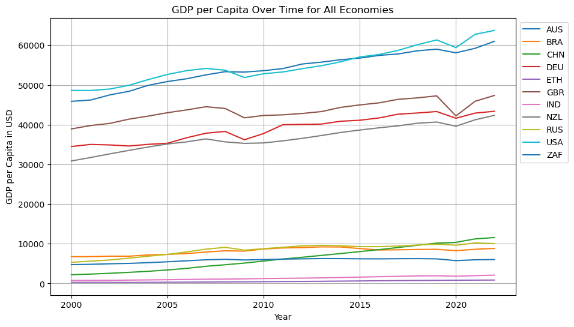
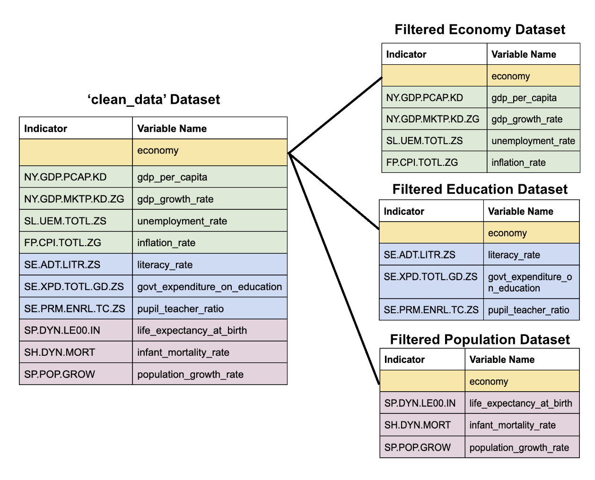
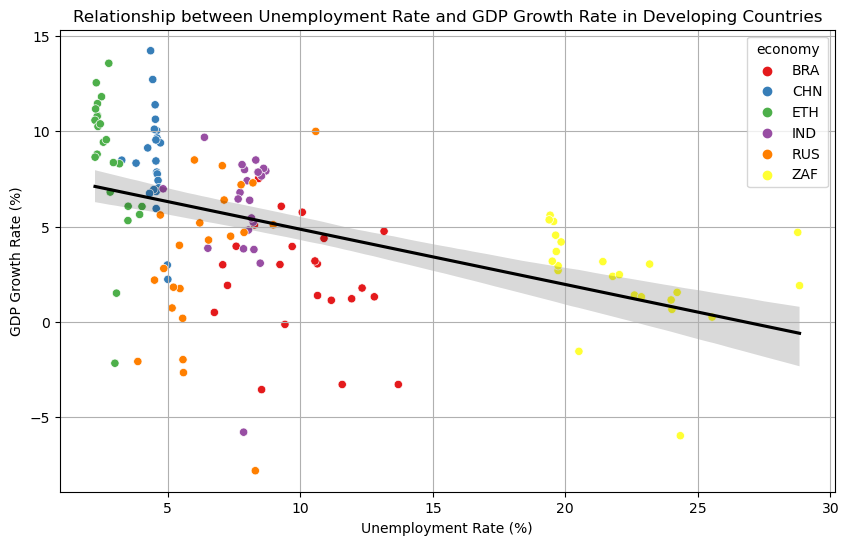
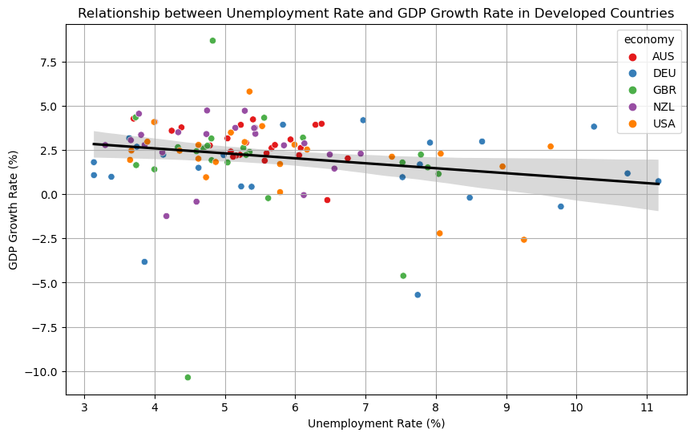
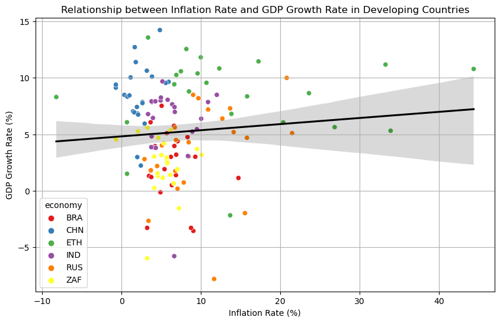
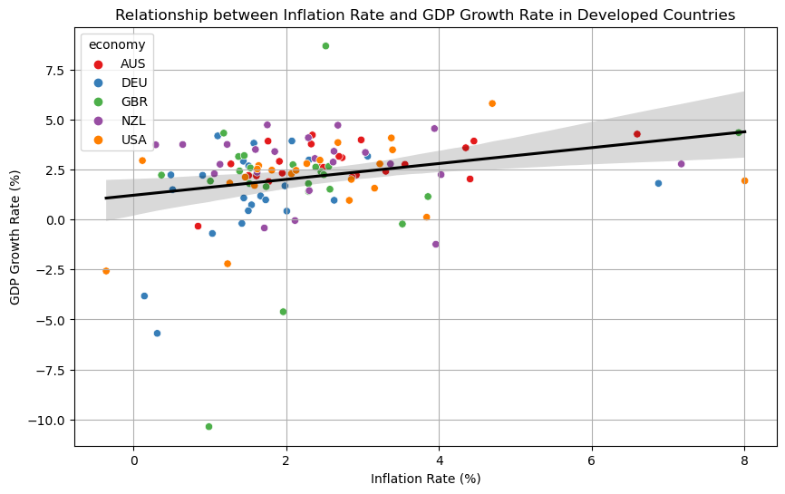
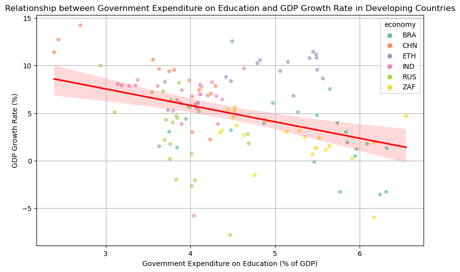
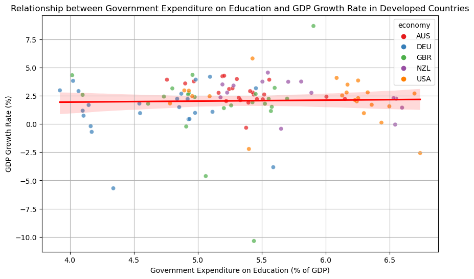
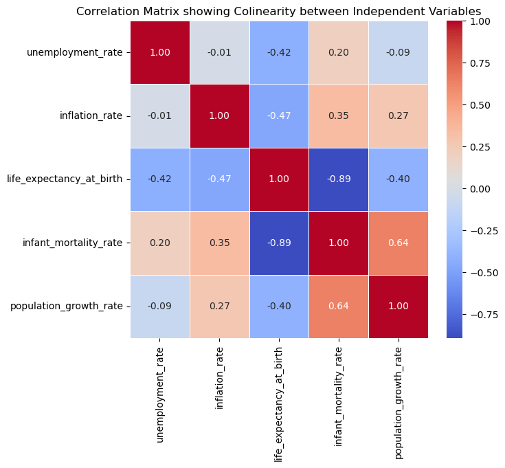

| Developed Countries | Developing Countries |
|---|---|
| United States of America | Russia |
| Australia | Brazil |
| United Kingdom | China |
| Germany | India |
| New Zealand | South Africa |
| Ethiopia | |
QTM 350 Final Project: Finding the Key to GDP Growth in Developing, Transitionary and Developed Nations
Introduction
As transportation, technology and media advance at breaknecking speed, the world’s economies have become significantly more interconnected and global than ever before. While many countries have been able to use these advancements to aid in their development, many others are still in transitionary or developing stages and find themselves with imbalanced imports and exports. In order evaluate economic change over time, we sought to explore the metric of GDP growth rate in developing and developed countries over time. More specifically, we wanted to answer the question: Are economic and educational attainment metrics correlated with increased GDP growth rate? Is this correlation found in both developed and developing countries? For this analysis we focused on the the relationship between unemployment rate, inflation rate, and government expenditure on education to GDP growth rate. Then we examined the potential for collinearity (confounding variables), using a correlation matrix, of all nine extracted independent economic and educational variables.
Overall, we found that inflation rate was the only metric that had a positive correlation to GDP growth rate and that it was somewhat consistent on in developing and developed countries. While unemployment rate had a negative correlation to GDP growth rate for both types of economies, it had a much larger correlation for developing countries. Finally, government expenditures on education had a negative correlation with GDP Growth Rate only in developing countries but almost no correlation on average in developed countries. In our analysis of independent health and education variables, we found that health factors were signficantly more correlated with one another than educational factors.
Data Description
The data for this project originates from the public World Bank World Development Indicators database. As an organization, the World Bank seeks to provide key financial and educational assistant to in developing countries’ so that they may develop infrastructure and advance economically. In support of their mission, the organization collects reliable data from recognised international agencies and organizations to produce the database used in this project. While the World Bank has more than 1,600 indicators for 217 economies spanning as far back as 1960, we focused on only nine indicators from the years of 2000 to 2022. These nine indicators span the topics of economics, education, and population. In order to refine our research question and specify our scope, we chose to complete our analysis on five developed nations and 6 developing nations which can be shown in the table below.
We chose these nations as their economies repersent some of the largest in the world and they take on a repersent a nuanced and wide definition of the concept of a developing and developed nation. The two specific countries we want to note in this analysis are China and Russia as they are a case example of large, rich economies that often fall under a grey zone of a transitionary economy. While many consider China and Russia developed, both do not yet meet the conditions under the United Nations to be developed. To understand this before we made our classifications, we looked plotted each countries’ GDP per capita from 1960 to now. As You can see if the following graph, Russia and China fall very similiarly historically but even still today with the other developing countries of our study. While GDP per Capita is not the only significant metric to a country’s status as developed, we wanted to illustrate and make clear our classifications and their foundings.

Data Merging
To complete our analysis we utilised SQL to extract four economic indicators, three health indicators and three population indicators from the World Bank’s database. The following entity relationship diagram shows this extraction and the usage of economy as a primary key amongst them.

Data Cleaning and Pre-processing Procedures
While we extracted population variables, economic variables, and health variables to evaluate variables most correlated with changes in GDP growth rate over time, we quickly found in data cleaning that certain variables were less usable than others. Specifically in developing countries, the health and educational metrics often did not include enough or completed time series data to preform our analysis. As a result, we relied on a smaller set of key variables which had statistical power.
Key Variables
The key variables relied upon in this paper were unemployment rate, inflation rate, government expenditure on education, and GDP growth rate.
Unemployment Rate: The unemployment rate measures the percentage of the labor force that is actively seeking but unable to find employment. Many see it as a proxy for the health of a country’s labor market and economy.
Inflation Rate: The inflation rate indicates the annual percentage change in the average price level of goods and services in an economy over a specific period. In other words, the inflation rate shows how the purchasing power of a country’s currency is changing over time.
Government Expenditure on Education: This indicator represents the government’s spending on the educational sector as a percentage of the economy’s GDP. The World Bank includes expenditures funded by international sources to the government and defines government as consisting of local, regional and central branches. Generally this measure reflects the government’s investment in human capital development.
GDP Growth Rate: The GDP growth rate measures the annual percentage change in a country’s gross domestic product (GDP), which indicates the overall economic growth or contraction of a country. The World Bank defines this as the sum of gross value added by all resident produces in the economy and product taxes minus subsidies otherwise not included in products’ values. It should be noted, especially for developing countries which are often depended on for natural resources and minerals, that the GDP and its growth rate does not reflect any depreciation or damage of natural resources. GDP growth rate is thought of as a key indicator of economic performance and stability.
Data Analysis
To best visualise our results we have displayed all plots of developing countries on the left and all plots of developed countries on the right.
The Economic Story: Tracking Unemployment and Inflation Rate to GDP Growth Rate
In term of economic indicators, the first key difference in our aggregate of developing and developed economies is the range of GDP growth rate, inflation rate and unemployment rate. As you can see in both the plots below, the GDP growth rate takes on a slightly larger range for our aggregate of developing countries. The more significant trend, however is that the dispersal of points across the range is more consistently varied in developing countries than developed ones. While there is a few years of outliers in the developing countries, such as Great Britain in 2008 reaching a horrific GDP growth rate below -10%, the devloped countries over time have a much tighter dispersal to one another. We can also see this is in the error bands of the developing countries being consistently thicker than the error bands of developed countries. We can credit this to developing economies being both more unique to each other than the grouping of developed nations as well as the developing nations having larger changes economies through time. It should be noted that in the same way developing nations sometimes had large declines, they had similiarly high peaks unlike the developing nations which almost never rose above a GDP growth rate above 5% and remained relatively stable through time.
The correlation between unemployment and GDP growth rate is negative in both sets of economies but with a much larger correlation in developing countries. Unlike the other metrics, which had a decently similiar dispersal of the countries in each classification, South Africa (ZAF) had a consistently much higher unemployment rate than the rest of the developing countries. THis country also tended to be both much above and much below the correlation line cementing its status as a outlier in the data.
 
The correlation between annual inflation rate and GDP growth rate had a slightly positive correlation in both developing and developed economies with again much smaller error estimations for developing nations. Inflation rate being a more consistent correlation across developed and developing economies than unemployment rate could be explained by the fact that inflation is influenced by broader macroeconomic factors, such as monetary policy, global commodity prices, and supply-demand dynamics, which tend to have more uniform effects across economies. In contrast, unemployment is more closely tied to country-specific factors like labor market conditions, structural issues, and social policies, which can vary widely between developed and developing nations, leading to less consistent correlations.
 
The Education Story: Tracking Government Education Expenditures and GDP Growth Rate
The correlation between government expenditures on education and GDP growth rate was suprisingly negative in developing countries but neutral in developed countries. This was the only indicator in which the range was decently similiar among the two classifications, with government expenditures making up between 2 and 7 percent in developing countries and between about 4 and 7 percent in developing countries, which gives added signficance to the different in trend between the educational and economic metrics. A possible explanation for this trend could be that in developing countries, government spending on education may not always be efficiently allocated or may be hindered by structural issues such as corruption, inadequate infrastructure, or a lack of educators, which limits its impact on economic growth. In contrast, in developed countries, education systems are generally more established and better funded, leading to a more neutral relationship with GDP growth.
 
Correlation Between Education, Economy and Health Metrics

The indicators with the highest correlation between one another were life expectancy at birth and infant mortality rate. This correlation was -0.89 meaning that when infant mortality was increased, life expectancy at birth was very commonly also decreased. The indicators with the lowest correlation were inflation rate and unemployment rate which had a very neutral correlation of -0.01.
Results and Discussion
In summary, the data suggest that developing economies are much more prone to economic volatility than developed ones, with higher growth potential but also higher risks. While the negative correlation between unemployment and GDP growth is consistent with economic theory, the strength of this relationship varies, with developing countries exhibiting more sensitivity to fluctuations. South Africa’s outlier status further highlights the complexity of unemployment trends in developing countries, where factors like inequality, historical legacies, and a limited labor market can significantly distort the typical patterns seen in other emerging economies. Future research could explore the specific explanations behind South Africa’s high unemployment rates and investigate whether similar patterns are observable in other nations with comparable structural challenges.
While the results of educational investments to growth rate were somewhat suprising as we often hear of education as a key to economic sucess we must remember it is a very lagging indicator which will not show economic impact immediately. In a developing country, a significant portion of GDP growth may be driven by other factors, such as resource extraction, which are less dependent on educational expenditures. While education is crucial for long-term development, its immediate effect on GDP growth may be less pronounced in developing countries compared to their developed counterparts, where the link between education and economic productivity may already be more fully realized.
In terms of indicator coorelation, we unsuprisingly found that health indicators, such as infant mortality, life expectancy at birth, and population growth rate, were correlated highest with each other. This can be explained by the fact that a lot of these metrics are somehow baked into one another or repersent a smaller subset of general health indicators. For instance, if infant mortality rate as a percentage of births is high, life expectancy at birth must be low by virtue of being oppositional forces. In other words, the health indicators are a lot less independent than the economic indicators.
Economic indicators were in general much less correlated with each other which make sense in the general understanding that inflation rate is a measure of change in currency value while unemployment rate is a measure of change in available employment and human behavior. While they are both heavily associated with the economy, they do not both boil down to a identical root observation like the health metrics do to human life span.
A key limitation of this study is its limited data to developing countries. As described before many factors of health and education are not able to be accurately studied as the World Bank does not have reliable and consistent data through time of these countries. This has large implications when we think of the power of data in telling a country’s stories. Without a sound story it is hard for organizations, governments, and charities to accurately understand and meet developmental needs. Particuarly in developing countries with little governmental transparency, many markers of human development are hard to follow through time and accurately gauge the effects of policy, conflict, and environmental impacts. Utilising other data sources that specialise on these countries could be a possible way of perservering against this limitation in the future.
Conclusion
Overall the World Bank’s Developmental Indicators is an amazing way to find and study trends in different types of economies. While developing countries economies are on average more subject to short term impacts, they also have the largest room to grow in advance. Understanding the key factors that lead to GDP growth rate is essential to making a path towards a future where people in every region of the world can have access to basic education, health, and opportunity.